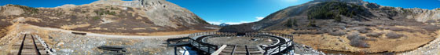

|
Ghost Towns Animas Forks St. Elmo Floresta Crystal City Summitville Holy Cross City Alpine Tunnel Vulcan Shavano South London Independence Ashcroft Telluride Alta Carson Tomboy Mine Ironton Iris Bonanza Iris Bonanza Silverton Passes Engineer Pass Cumberland Pass Mosquito Pass Cottonwood Pass Independence Pass Ophir Pass Monarch Pass Imogene Pass Cemeteries Crested Butte Whitepine Glenwood Springs Ophir Creede Exchequer |
About Alpine TunnelThe top photo below shows a 360-degree panorama of the alpine where the Alpine Tunnel enters the mountain (end of train track bed on the left) as well as the new turntable. The next two photos show the frightening road (the original train track) up to the west entrance to the tunnel. The right photo is taken across the original site of the small town of Woodstock; the road up to Alpine Tunnel cuts across the mountain in the middle of the photo. (In the first photo you can also see the clearing in the forest where Woodstock was built.) It is extremely difficult for Jeeps or any other vehicles to pass one another on this road: construction of the road for the original track is considered one of the great engineering marvels of the 19th century. There have been a number of accidents on this road. The many deaths in this general area over the past 130 years makes a visit to Alpine Tunnel a bit disturbing. What is probably the most disturbing of all, however, is the fact that a horrible avalanche destroyed the town of Woodstock in 1884, killing thirteen people, including six of the eight children of the woman who ran the boarding house. This was the single most deadly avalanche in Colorado history. The town was never rebuilt. Other than flattened foundations, the only remaining structure in Woodstock is shown in the third photograph. However, there is one isolated cabin, built within the last thirty years, on private property deep in the woods just above Woodstock. The owner keeps the curious away through use of large, plastic baby dolls, nailed (through the forehead) to trees along the dirt road leading to his home. |